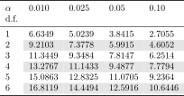
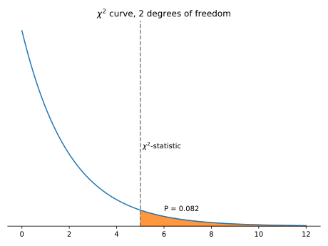

The Chi-Square Test#
Important Readings
[FPP07], Chapters 28
We used \(z\)-tests for proportions, or when our box model had just two categories and could be cast as a 0-1 box.
The simple 0-1 days are gone. Now we live in a world where the box might contain many values. The NBA lottery chooses among fourteen teams or a gambler might throw a six-sided die. At work, engineers randomize over who is supposed to conduct code reviews. A name is randomly selected, as if from a box, and that person is stuck with the onerous task of double-checking a colleague’s code. The box below considers a three-colleague example.
{kind=link}
Suppose that over 30 draws, we expect the work to be split evenly but that Velma does 10 reviews, Marvin is tasked with 15, and Paul only does 5.
Paul is more senior and, only after seeing the data, we’re suspicious that the game has been rigged to lower his workload. A \(z\)-test could be applied here if we consider Paul vs. Everyone. Let \(p\) be the proportion of times Paul is selected. Our null is \(p = \frac{1}{3}\) and the alternative is \(p < \frac{1}{3}\).
The resulting \(z\)-statistic is
This is beyond the critical value of -1.645 for a left-tailed test with a 95% confidence level. We’re tempted to declare that Paul is cheating. But the next section should give us pause.
The \(\chi^2\) Test#
The previous application of the \(z\)-test might have been too opportunistic. With enough colleagues, someone is probably going to get a bad break. If, in practice, we only became suspicious of Paul after seeing the data, that should also raise red flags. To address the fairness of this kind of random name drawing, we should ask the question “are all names equally likely” instead of asking if a particular name comes up with a one-third chance.
In this setup, we don’t reduce this to a Paul vs. Everyone binary. Instead, we calculate a \(\mathbf{\chi^2}\)-statistic,
The sum is taken over all possible names. Note we don’t convert anything to proportions, but we work directly with the counts and expected counts. With our data,
There are two degrees of freedom because once we know two of the values from 10, 15, and 5, we know the last. The \(\chi^2\) statistic comes from a \(\chi^2\) distribution with two degrees of freedom. More generally, the statistic comes from a \(\chi^2\) distribution with degrees of freedom equal to the number of terms minus one.
Using the \(\chi^2\) Distribution#
The \(\chi^2\) distribution is characterized by a degrees of freedom parameter.
Critical Values#
Critical values can be found using a table like the one in Fig. 56. These work like the critical value tables for \(t\)-tests.
{kind=link}

Fig. 56 \(\chi^2\) critical values#
When our test statistic is greater than the critical value, we should reject the null hypothesis. In the example above, the test statistic is \(\chi^2 = 5\) and there are 2 degrees of freedom. Using \(\alpha = 0.05\), the critical value is 5.9915. Our test statistic is smaller, so we fail to reject the null. The \(\chi^2\)-test turns out to be more charitable toward Paul.
Recall that if the statistic is zero, that means the observed counts perfectly matched the expected counts. Therefore, only a large test statistic indicates data that deviates from what you would expect according to the null hypothesis.
Finding P-values#
We can find the P-value from the appropriate \(\chi^2\) curve. This is the area to the right of the statistic. This will require a calculator and there is no analog to the 68-95 rule that can help us estimate a P-value. And while the \(t\) distribution approached a normal with enough degrees of freedom, a \(\chi^2\) distribution will not.
In Google Sheets, the P-value can be found with =CHISQ.DIST.RT(5,2)}. The calculator embdedded below also gives the P-value.
Assuming a null of equal chances, our data or data more extreme would only arise about 8% of the time. This doesn’t fall below the typical 5% threshold.
{kind=link}

Python Interactive#
Use this Colab notebook to find the area to the right of a value for a given degrees of freedom.
Tests of Independence#
Below are two contingency tables. Each summarizes a different data set, where a single observation is a person’s nationality and primary language. The single-variable summaries are the same for both. Both have 140 observations in Germany, 280 in America, and 70 in Belgium. And both have 140 German speakers, 280 English speakers, and 70 Dutch speakers. They differ in how the two variables are related.
In Table 14, the variables are independent. In aggregate, 4 of 7 people speak English. This ratio is the same within each country, so that nationality isn’t related to language. In Table 15, the opposite is true. In aggregate, 4 of 7 people speak English, but they are all found in America.
Germany |
America |
Belgium |
Total |
|
|---|---|---|---|---|
German |
40 |
80 |
20 |
140 |
English |
80 |
160 |
40 |
280 |
Dutch |
20 |
40 |
10 |
70 |
Total |
140 |
280 |
70 |
490 |
Germany |
America |
Belgium |
Total |
|
|---|---|---|---|---|
German |
140 |
0 |
0 |
140 |
English |
0 |
280 |
0 |
280 |
Dutch |
0 |
0 |
70 |
70 |
Total |
140 |
280 |
70 |
490 |
These examples are stark. A test of independence can be used to make the analysis more principled.
The hypotheses#
The idea of the test is as follows.
Assume the null hypothesis (independence).
We can use the row and column totals to estimate the expected counts.
Devise a statistic that compares expected counts to actual counts.
Compute the degrees of freedom as #Rows-1 \(\times\) #Columns-1.
Compare the statistic to a \(\chi^2\) distribution with the right degrees of freedom. Calculate P-value as the probability a \(\chi^2\) random variable would be greater than the statistic.
Reject the null if the P-value is below \(\alpha\).
The expected values for each cell can be calculated as
The statistic is calculated as
If the observed values are those from Table 15, then the expected values are those in Table 14. The sum is \(\chi^2 = 980\). And the degrees of freedom are calculated as \((3-1)\times(3-1) = 4.\) The statistic is extreme, based on Fig. 56, so we can reject the null of independence. This shouldn’t be that surprising because we had a reasonable amount of data and the data didn’t look independent.
Did we ever use the sample size though? No, but kind of. The degrees of freedom don’t depend on the sample size, so the critical value doesn’t change. But the statistic grows with \(n\) if we fix the observed proportions.
The Assumptions#
The necessary assumptions are similar to proportion tests.
Counted (qualitative) Data
Independence (e.g. individuals being counted are sampled independently)
Randomization (to generalize results)
Expected Cell Frequency (rule of thumb: expectation of at least 5 for each cell [DVVB19])
Constructing Contingency Tables in Google Sheets#
A contingency table can be made using the pivot table functionality in Google Sheets or Excel. The video below shows how to do this (no audio).
Application: The Evolution of Taylor Swift#
This spreadsheet includes a row for each of the 530 Taylor Swift tracks currently on Spotify. Our research question will be have the themes in Swift’s songs changed since she left country for pop? We are therefore interested in two variables, genre and song theme. Both are qualitative variables and somewhat subjective. We will consider every song on 1989 or a later album to be pop. Earlier songs are country. A random sample of 82 songs are labeled by ChatGPT. ChatGPT suggests categories:
Love and relationships
Self-discovery and empowerment
Storytelling and reflection
Other
To be able to construct a contingency table, these categoreies must be mutually exclusive and exhaustive. A song like Love Story is labeled as “love and relationships” despite involving, as the track name suggests, a story. After this, we have the two essential columns.
Next, the contingency table can be constructed.
Genre |
Love and Relationships |
Self-discovery and Empowerment |
Storytelling and Reflection |
Other |
Total |
|---|---|---|---|---|---|
Country |
8 |
0 |
8 |
5 |
21 |
Pop |
9 |
10 |
15 |
27 |
61 |
Total |
17 |
10 |
23 |
32 |
82 |
The null specifies that the two variables are independent. Under the null, the data would like the following. Recall that the expected values are found as \(\frac{\text{Row Total}\times \text{Column Total}}{\text{Grand Total}}\).
Love and Relationships |
Self-discovery and Empowerment |
Storytelling and Reflection |
Other |
Total |
|
|---|---|---|---|---|---|
Country |
4.35 |
2.56 |
5.89 |
8.20 |
21 |
Pop |
12.65 |
7.44 |
17.11 |
23.80 |
61 |
Total |
17 |
10 |
23 |
32 |
82 |
With this, we can calculate the \(\chi^2\)-statistic.
Genre |
Love and Relationships |
Self-discovery and Empowerment |
Storytelling and Reflection |
Other |
Total |
|---|---|---|---|---|---|
Country |
\(\frac{(8 - 4.35)^2}{4.35} = 3.06\) |
\(\frac{(0 - 2.56)^2}{2.56} = 2.56\) |
\(\frac{(8 - 5.89)^2}{5.89} = 0.76\) |
\(\frac{(5 - 8.20)^2}{8.20} = 1.25\) |
7.63 |
Pop |
\(\frac{(9 - 12.65)^2}{12.65} = 1.05\) |
\(\frac{(10 - 7.44)^2}{7.44} = 0.88\) |
\(\frac{(15 - 17.11)^2}{17.11} = 0.26\) |
\(\frac{(27 - 23.80)^2}{23.80} = 0.43\) |
2.62 |
Together, the \(\chi^2\)-statistic is about 7.63 + 2.62 = 10.25.
Is the test statistic large enough to lead us to reject the null? There are 2 degrees of freedom, so the critical value would be 5.99 according to Fig. 56. We can reject the null because our statistic is greater. We have evidence that genre and song theme are related. It seems like Swift’s genre shift also included thematic shifts.
Can we trust the analysis? Our calculations are correct, but we should think about the assumptions. Our data is small. In particular, the expected cell count for Country and Self-Discovery is just 2.56. A rule of thumb is that each expected cell count should be at least five. Our test fails this rule of thumb, so we shouldn’t take the analysis that seriously. Further, even if we leave aside the sample size, we must include the usual caveats about causality. There’s nothing in the data or the test that the genre drives different song themes. Swift’s transition to pop also came with her maturation as an artist. Perhaps artists progress to different song themes over time and that is related to the genre shift only coincidentally.
Python Code#
The Python code below repeats the same steps. The \(\chi^2\)-statistic is slightly different due to rounding.
import pandas as pd
from scipy.stats import chi2_contingency
# Observed data
data = {"love and relationships": [8, 9],
"self discovery and empowerment": [0, 10],
"storytelling and reflection": [8, 15],
"other": [5, 27]}
# DataFrame for observed data
df = pd.DataFrame(data, index=["Country", "Pop"])
# Performing the chi-squared test for independence
chi2, p, dof, expected = chi2_contingency(df, correction=False)
print(f"Chi-squared statistic: {chi2:.2f}")
print(f"P-value: {p:.2f}")
print(f"Degrees of freedom: {dof:g}")
pd.DataFrame(expected, columns=df.columns, index=df.index).round(2)
Chi-squared statistic: 10.24
P-value: 0.02
Degrees of freedom: 3
| love and relationships | self discovery and empowerment | storytelling and reflection | other | |
|---|---|---|---|---|
| Country | 4.35 | 2.56 | 5.89 | 8.2 |
| Pop | 12.65 | 7.44 | 17.11 | 23.8 |
Exercises#
Exercise 49
Which test should you use for each of the following? Your choices are one-sample \(z\)-test, one-sample \(t\)-test, two-sample \(z\)-test, \(\chi^2\) test, \(\chi^2\) test of independence, or consult a statistician instead.
Does enrollment in early morning classes lower students’ course grades?
Does enrollment in early morning classes lower the likelihood of future STEM course enrollment?
Are married people more likely to be registered Republicans?
Are party affiliation and marital status related or are they independent?
Is a six-sided die fair?
Exercise 50
Travis’s playlist contains 4 songs by Taylor Swift, 2 by Pavarotti, and 4 by Little Richard. He listens to 100 songs on shuffle mode, resulting in Swift being played 30 times, Pavarotti being played 25 times, and Little Richard being played 45 times. Use a \(\chi^2\)-test to determine if shuffle mode is randomizing over each song with equal probability.